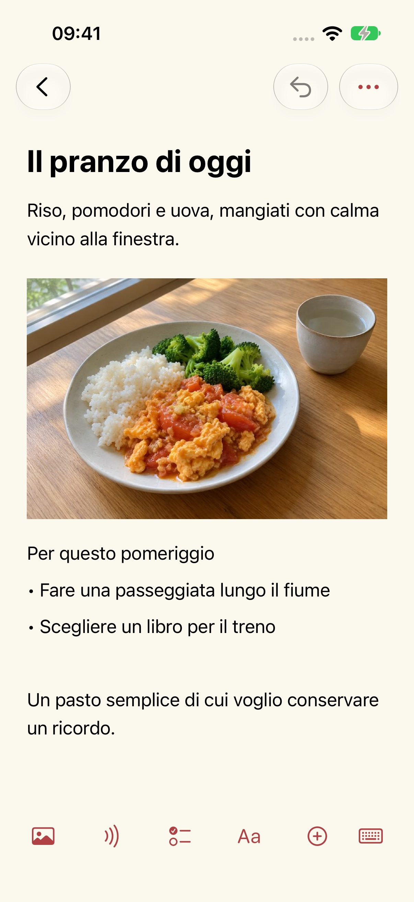
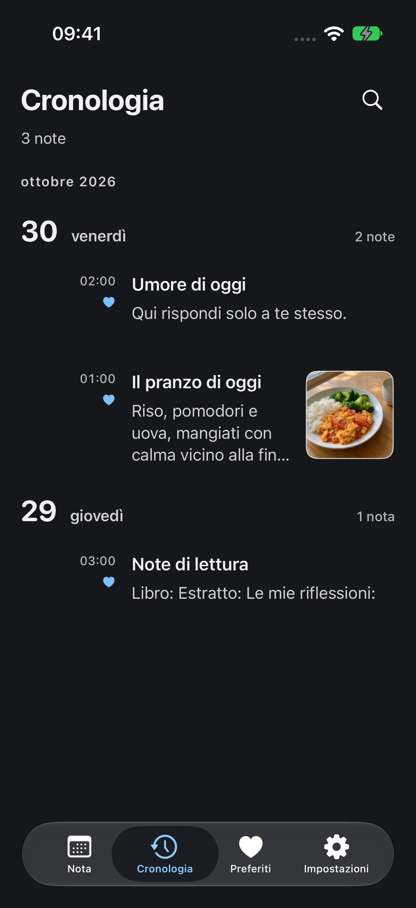

Aiuto e supporto
Aggiornato: 2026-10-29
Perché ho creato Mowyns
Cercavo uno strumento per prendere appunti che fosse semplice, comodo e completamente gratuito. Dopo una lunga ricerca non avevo ancora trovato quello giusto. Così ho creato Mowyns, e lo uso anch’io ogni giorno.
Una pagina per oggi
Volevo aprire il quaderno e trovare la giornata di oggi. Il calendario mostra le note di una data alla volta, così quelle di ieri restano a ieri. Per tornare indietro, scegli una data o scorri la cronologia. I ricordi rimangono, e ogni nuovo giorno ha il suo spazio.




Nota
Scatta una foto del pranzo e aggiungi qualche parola. Annota qualcosa che vorresti fare. Testo, foto e registrazioni possono stare insieme nella stessa nota.
Data
Prima di partire, salva informazioni sul treno, numeri dei posti, schermate dei biglietti e luoghi da visitare nelle date corrispondenti. Quando arriva quel giorno, apri la pagina e ritrova il programma. Qualche giorno di note può diventare un semplice itinerario.
Calendario
In cima all’elenco del giorno, trascina verso il basso una volta per aprire il calendario e una seconda volta per la ricerca rapida. Con il calendario chiuso, scorri la data a sinistra o a destra per passare al giorno successivo o precedente.
Aspetto
Scegli un colore del tema e l’aspetto chiaro o scuro. Regola dimensione del testo e interlinea come preferisci.
Nuova nota
Scegli Nuova nota e inserisci titolo e testo. La barra in basso nell’editor permette di aggiungere foto, registrazioni, liste, tabelle e file.
Backup e trasferimento
Le note vengono salvate su questo dispositivo. In Impostazioni → Gestione dati → Backup e trasferimento puoi esportare e importare backup standard o crittografati. Conserva i tuoi backup: non c’è sincronizzazione automatica.
Trascrizione audio
L’app richiede l’accesso alla fotocamera o al microfono solo quando scatti, scansioni o registri. Scegli tu foto e file tramite i selettori di sistema. Negare questi permessi non impedisce di scrivere note di testo. La trascrizione richiede il permesso di riconoscimento vocale e avviene solo sul dispositivo. Se dispositivo o lingua non sono supportati, l’audio viene conservato e la trascrizione indicata come non disponibile. L’app non passa al riconoscimento cloud. Puoi revocare i permessi nelle impostazioni di sistema.
Eliminate di recente
Apri Impostazioni → Gestione dati → Eliminate di recente per ripristinare una nota. Dopo l’eliminazione definitiva serve un backup esportato in precedenza. Lo sviluppatore non conserva copie delle tue note.